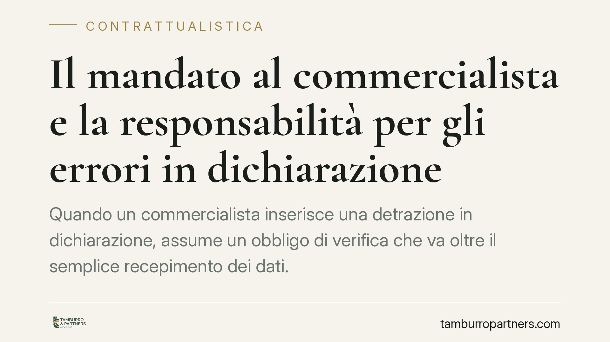

Il mandato al commercialista e la responsabilità per gli errori in dichiarazione
Quando un commercialista inserisce una detrazione in dichiarazione, assume un obbligo di verifica che va oltre il semplice recepimento dei dati. La giurisprudenza di legittimità riconduce questa responsabilità alla diligenza qualificata del professionista. Capire i confini del mandato è decisivo per chi affida la propria posizione fiscale a più consulenti e vuole sapere chi risponde delle sanzioni.

Il contratto di mandato come chiave di lettura
Il rapporto tra contribuente e commercialista è, sul piano civilistico, un contratto d'opera intellettuale. Il professionista si obbliga a eseguire una prestazione con la diligenza richiesta dalla natura dell'attività: non la diligenza dell'uomo medio, ma quella qualificata prevista dall'art. 1176, comma 2, del Codice civile, parametrata al livello tecnico della categoria.
L'oggetto del mandato definisce i confini della responsabilità. Se l'incarico comprende la redazione e la trasmissione della dichiarazione dei redditi, in quell'oggetto rientra anche la verifica della correttezza degli elementi che il professionista fa confluire nel modello. Inserire una detrazione significa attestarne, nei limiti della diligenza esigibile, la plausibilità giuridica.
L'obbligo di verifica dei presupposti
Un orientamento consolidato della giurisprudenza di legittimità ritiene che il commercialista che inserisce una detrazione o un'agevolazione in dichiarazione debba controllare la sussistenza dei presupposti di legge, inclusi gli adempimenti formali che la norma agevolativa richiede. Non è sufficiente ricevere la documentazione da un altro professionista — poniamo un tecnico che ha seguito la pratica edilizia — e trasferirla nel modello senza alcun vaglio.
La responsabilità per l'inadempimento si inquadra nell'art. 1218 del Codice civile: il professionista che non esegue esattamente la prestazione è tenuto al risarcimento, salvo provare che l'inadempimento è derivato da causa a lui non imputabile. La ripartizione dell'incarico tra più consulenti non esonera automaticamente il commercialista dal dovere di controllo sui dati che sottoscrive.
La misura della diligenza resta però ancorata all'oggetto concreto del mandato. Clausole che delimitano l'ambito dell'incarico — ad esempio escludendo espressamente la valutazione tecnica di pratiche gestite da terzi — possono incidere sulla responsabilità, purché siano chiare, pattuite per iscritto e non traslino sul cliente rischi che la natura della prestazione pone in capo al professionista.
Implicazioni pratiche
Le posizioni del professionista e del contribuente vanno tenute distinte.
Per il contribuente: le sanzioni e le maggiori imposte accertate dall'Agenzia delle Entrate restano dovute all'erario. Il contribuente è il soggetto che la dichiarazione la sottoscrive, e la firma ha un valore sostanziale: fa propria la posizione fiscale. L'eventuale colpa del consulente non lo libera verso il fisco, ma gli apre la strada a un'azione di risarcimento contrattuale nei confronti del professionista.
Per il commercialista: la delega di parte della pratica a un altro tecnico non frammenta automaticamente la responsabilità. Chi compila e trasmette la dichiarazione risponde degli elementi che vi inserisce, nei limiti della diligenza esigibile. La prova della causa non imputabile — ad esempio un vizio documentale non riconoscibile con l'ordinaria perizia — è a carico del professionista.
Sul piano temporale, l'azione di responsabilità contrattuale verso il consulente si prescrive nel termine ordinario di dieci anni (art. 2946 c.c.), decorrente dall'inadempimento. È un orizzonte ampio, ma richiede comunque di individuare con precisione il momento rilevante.
Cosa fare in concreto
- Verificate l'oggetto scritto del mandato: accertate quali attività rientrano nell'incarico e quali ne sono espressamente escluse.
- Documentate il flusso informativo tra professionisti diversi: chi ha fornito cosa, in che data e con quali attestazioni.
- Conservate la documentazione di supporto delle detrazioni per l'intero periodo accertabile, anche oltre la trasmissione della dichiarazione.
- Individuate la ripartizione delle responsabilità tra i professionisti coinvolti, tenendo conto dei termini di prescrizione dell'azione risarcitoria.
- Leggete con attenzione eventuali clausole limitative della responsabilità nel contratto di consulenza, valutandone la portata effettiva.
Il valore della firma
Resta un punto fermo: la firma in dichiarazione non è un adempimento formale. È un atto che fissa una posizione fiscale e distribuisce responsabilità su piani distinti — quello pubblicistico verso l'erario e quello privatistico tra committente e consulente. Comprendere questa doppia dimensione è il presupposto per gestire con consapevolezza il rapporto con i propri professionisti.
---
Contributo informativo a cura di Tamburro & Partners Avvocati — Avv. Giuseppe Tamburro. Non costituisce parere legale.
Ogni contratto ha il suo equilibrio.
Se vuoi una revisione delle clausole o una redazione su misura, scrivi allo studio. Ti rispondiamo entro un giorno lavorativo.